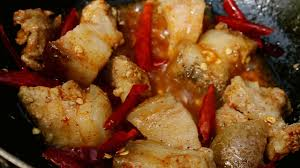

Phaksha Bazum

Description
Phaksha can be literally translated as Pork Meat
Paksha Bazum is an authetic pork curry with only ginger and garlic as the spice
Ofcourse - No Bhutanese dish is complete without Chillies
Ingredients
- Pork Meat
- Chillies
- Ginger
- Garlic
- Tomatoes
- Raddish
- Spring onions
- Salt
Cooking Steps
- Put the chopped (square blocks) in the pan
- Add half the crushed ginger
- Add Salt
- Add water to cover the entire pork meat
- Boil the content until the water reduces and meat starts releasing oil
- Once the oil is released, fry the meat in it's oil until slighly brown
- Add rest of the crushed ginger, chillies, tomatoes, radish and spring onions
Home